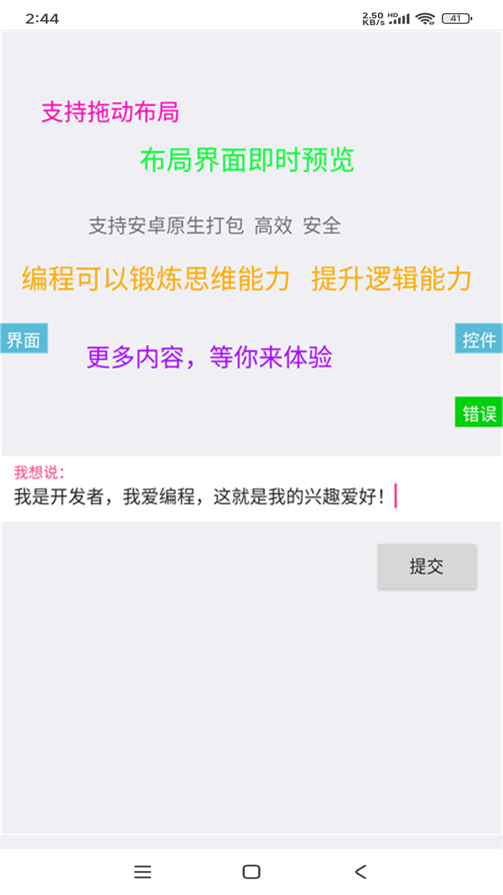
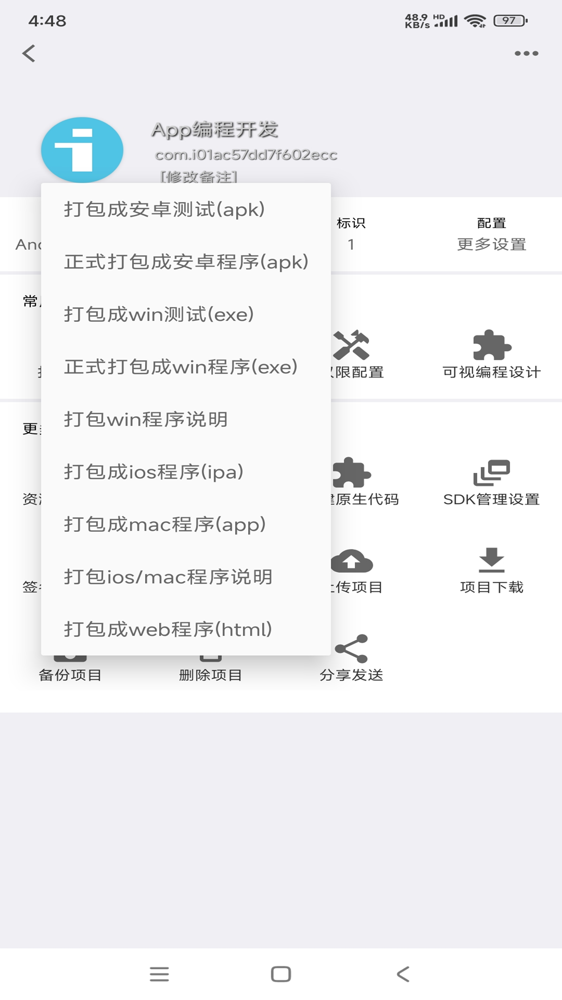

iApp 从 V3 到 V7，一款国产低代码工具走过了怎样的五年
从最初的可视化拖拽到裕语言 V7 的成熟，iApp 每一个语言版本背后都是一次产品定位的微调。我们顺着版本号看它的迭代节奏，猜一猜它下一步想做什么。
现在这版是什么样
如果你今天打开 iApp官网 的主界面，第一眼会觉得它"像个正经的 IDE"——左侧工程树，中间代码编辑区，右侧属性面板，底部还有个共享社区的入口。打包菜单里整整齐齐排着测试包、正式 APK、win、ios、mac、web 六七个选项，点一下离线就能出包。
但如果你三五年前见过它，印象可能完全不同。那时候它更像一个"会写代码的应用生成器"，核心卖点是可视化拖拽和模板：选组件、改属性、打包。代码编辑器是后来慢慢才做起来的，裕语言这个体系也是一路从 V3 长到 V7。我最近翻它的iapp文档，发现版本号本身就是一条线索——每跳一个大版本，团队都在悄悄换重心。

来路：裕语言的四次换血
文档里没有给出一份完整的 changelog，但从 V3、V5、V6 到 V7 四个版本在文档中的权重，大致能还原出一条路线。
V3 时代是"够用就行"。那时候的裕语言语法还很朴素，事件驱动 + 基础控件属性赋值就能覆盖大多数场景。社区里流传的源码案例大多是简单的应用列表、登录注册、网络请求三件套。异常处理、注释规范这些"工程化"的东西，V3 基本没提——写得出来就是硬道理。
V5 和 V6 是过渡版本。这两年团队明显在往"正经语言"方向赶，语法结构补全了循环嵌套、判断分支的完整形态，调试工具也开始出现。但真正让开发者感受到"变了"的，是文档里那个"日志调试三板斧"——syso() 打印、日志悬浮窗、调试模式单步执行，这套组合拳到 V6 才基本定型。从"出错了就重写"到"能定位到哪一行"，这一步是 iApp 从"玩具"往"工具"靠的关键转折点。
V7 是现在的主干。注释规范、异常处理机制、完整的语法树——文档里专门给注释与异常单独开了一个章节，这在 V3 时代是不可想象的。更重要的是，打包功能在 V7 之后变得"异常稳定"：离线编译不依赖任何云服务，测试包与正式包的区分清晰，版本号递增、签名、权限声明的流程也被规范了下来。最近几个版本的更新日志里，打包相关的修复占比很高，说明团队在这个环节花了不少精力。
文档里没提 V3 之前长什么样，也没说 V3 和 V5 之间隔了多久——但恰恰是这种"跳着给"的写法，透露出团队的态度：旧版本的包袱不太想背，只把他们认为"值得保留"的里程碑放进来。
规律：从迭代节奏看团队在死磕什么
把这些版本事件串起来看，有一个主线很清楚：从"让不会写代码的人也能做应用"到"让会写代码的人也愿意用"。
V3 时代的主叙事是"零代码"——打开就能拖组件。但拖到一定复杂度，可视化面板的表达力就顶不住了，必须让用户写代码。于是 V5/V6 开始补语言能力，V7 补工程化。社区生态的演进也跟这条线对上了：早期社区的热门帖子是"XX 模板分享"，现在最热的是"V7 异常处理实战"和"打包失败排查清单"。
另一条隐含的规律是离线优先。安装包从下载拿，iApp 的打包从头到尾没依赖过云编译，哪怕功能最简陋的时期也是本地出包。这在同类工具里算少数——很多低代码平台走的是"在线编辑器 + 云端编译"路线，iApp 从一开始就选择了离线，这条路走下来，带来了"无网也能出包"的优势，也限制了跨平台支持的节奏（跨平台打包选项虽然多，但成熟度参差不齐）。
有一件事团队似乎一直没怎么碰：多项目协作和版本控制。从 V3 到 V7，文档里始终没有提到 git 集成、项目导入导出的协作流程。共享社区的"源码分享"本质上还是单文件交换，没有往"多人协作"方向走的意思。这可能是它刻意放弃的市场——面向的本来就是个人开发者和小团队，不是企业级低代码平台。

预判：照这个路线，下一步大概率会发生什么
说几个从迭代规律推的判断，不当官方口径传。
第一，打包体系会继续加固。最近几个版本的更新里，打包相关的修复密度明显高于功能新增，说明这是当前的短板。跨平台选项里 win、web 相对成熟，ios 和 mac 还在快速迭代期——下一个大版本可能会把跨平台打包的体验补齐，至少把各平台的稳定性拉齐。
第二，调试工具还会升级。V7 的日志三板斧已经够用了，但还停留在"打印 + 单步"的阶段。断点调试、变量监视面板、性能分析器这些正经 IDE 该有的东西，文档里完全没提，大概率在 roadmap 上。
第三，社区生态可能会走"源码中心化"路线。现在的共享板块还是模板和案例为主，文档里反复提到"搜关键词找现成代码"、"读懂再改"。如果团队把共享板块往"可复用组件库"方向推，会比继续做模板更有长期价值——但这条路线也意味着语言本身必须足够稳定，否则组件库维护成本会很高。
最后也是最不确定的一个：AI 辅助编程会不会进 iApp。目前文档里完全没提 AI 相关功能，但同类工具已经有不少接了大模型做代码补全和自然语言生成。以 iApp 过去"追着补短板"的节奏，这件事可能在 V7 收尾阶段或 V8 前期出现——但也有可能团队选择不碰，把精力集中在打好基础上。
从 V3 到 V7，iApp 用了大概五年时间走完了"能用 → 好用 → 好用且工程化"的三段路。它不是功能最多的低代码工具，也不是跨平台能力最强的那个，但在"离线出包、单文件分发、社区生态"这几个点上，始终有一批忠实用户在跟着。下一个版本它会往哪走，可能还要看团队自己怎么想——毕竟他们从第一天起就没打算做第二个 App Inventor。
想跟着 iApp 的迭代路线继续往下走，或者想把自己的源码分享给社区，它的官网和中文文档都整理得很清楚。GitHub、Gitee、GitCode 三个仓库都有同步的源码整理，适合通读学习。